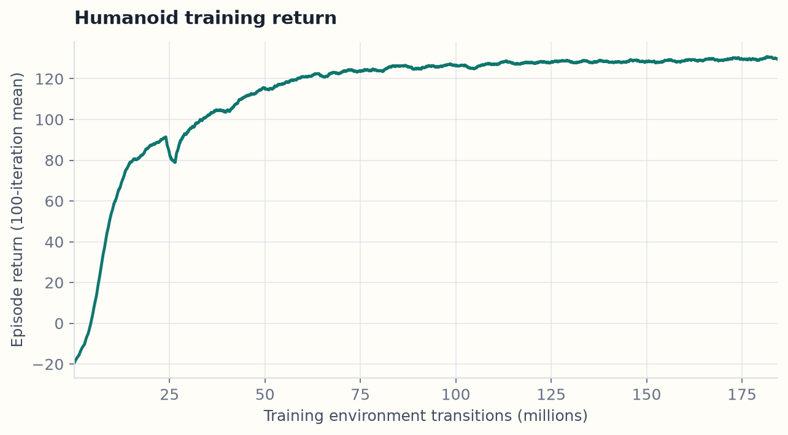
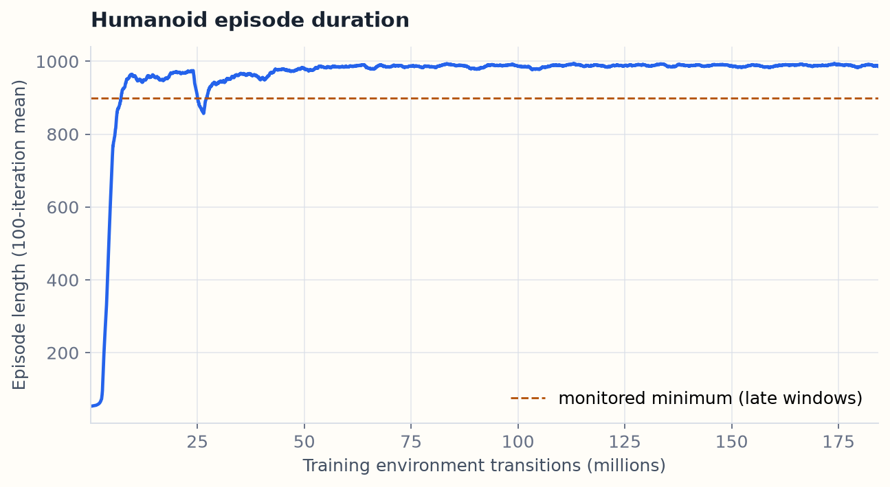
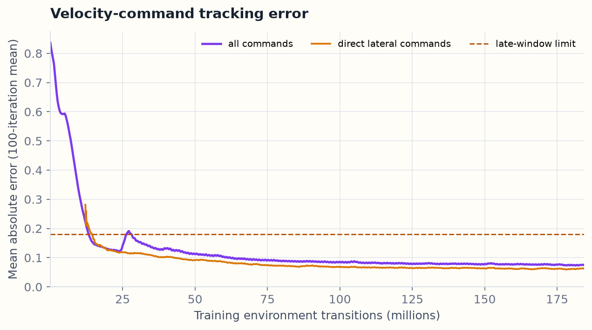
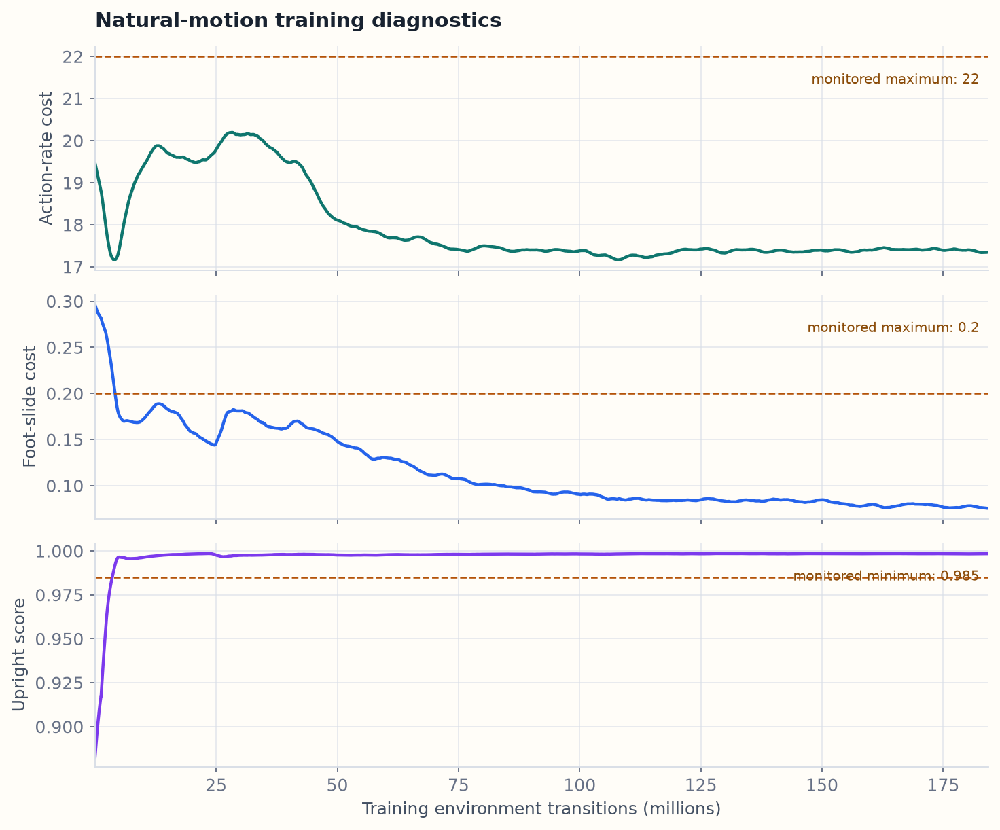
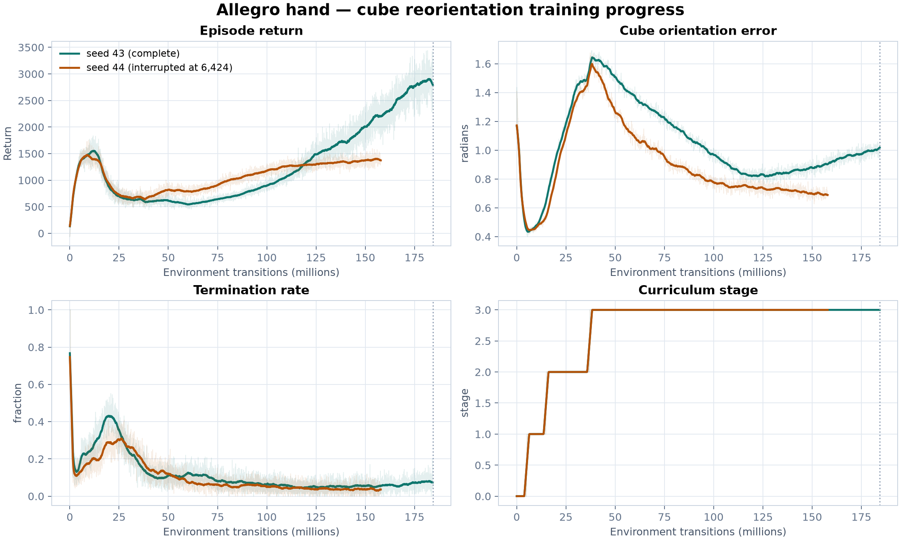
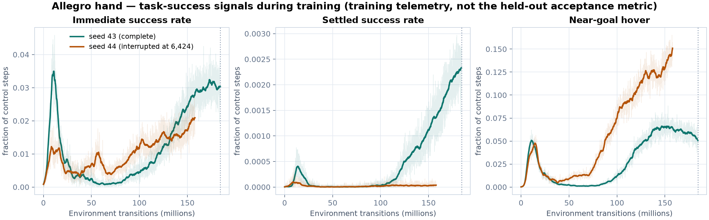

Newton reinforcement-learning report
Current training evidence
A live, evidence-bound snapshot of the humanoid locomotion remediation and dexterous-hand training now underway. Stale benchmark claims have been removed; only results backed by the current run manifests are shown.
Snapshot generated 2026-07-25 17:30 UTC · all times UTC · CPU-rendered plots from immutable training logs
All training on this machine has been halted since 2026-07-22 04:00 UTC. The dexterous-hand qualification stopped part-way: seed 43 finished its full budget, seed 44 was terminated at 86% and has no final checkpoint. No held-out acceptance evaluation has been run for either seed, so no hand-task quality claim is made either.
Humanoid training curves
All curves come directly from the 7,501-row seed-156 metrics log. A centered 100-iteration mean makes the trend legible; dashed lines mark frozen late-window monitoring limits, not post-hoc targets.




What passed, and what failed
training monitor passed
The terminal 50-iteration window (7,450–7,499) remained inside every predeclared training limit.
- Tracking error
- 0.0745 (limit ≤ 0.18)
- Direct lateral error
- 0.0622 (limit ≤ 0.18)
- Episode length
- 986.0 controls (limit ≥ 900)
- Termination rate
- 0.0153 (limit ≤ 0.10)
- Upright score
- 0.9985 (limit ≥ 0.985)
- Foot slide
- 0.0754 (limit ≤ 0.20)
- Action rate
- 17.35 (limit ≤ 22)
- Mean base height
- 0.7848 m (limit ≥ 0.70)
acceptance rejected
The frozen sweep completed three 64-trajectory cases, then checkpoint 4,500 fell in the command-switch scenario (seed 25,509). Environment 56 terminated at control 66. The run stopped immediately under the zero-failure rule.
- Completed cases
- 3 / 114 planned
- Completed transitions
- 192,000
- Failing checkpoint
model_4500.pt- Failure evidence
354dd0aee8009d0e4b6a73d798ac92cd80ff723cf49df37321426d6ba9f5ea72- Report gate
- not authorized
Passing training averages and failing a held-out temporal stress case are not contradictory: the latter probes a specific command transition and initial-state cell that aggregate training windows can miss. This is exactly why the independent gate is retained.
| Training window | Iterations | Tracking error | Episode length | Foot slide | Status |
|---|---|---|---|---|---|
| model1000 950 999 | 950–999 | 0.120 | 975.0 | 0.147 | pass |
| model1600 1550 1599 | 1,550–1,599 | 0.128 | 965.1 | 0.160 | pass |
| model3000 2950 2999 | 2,950–2,999 | 0.091 | 988.1 | 0.109 | pass |
| model4000 3950 3999 | 3,950–3,999 | 0.083 | 989.0 | 0.093 | pass |
| model4500 4450 4499 | 4,450–4,499 | 0.081 | 986.2 | 0.084 | pass |
| model5000 4950 4999 | 4,950–4,999 | 0.079 | 989.0 | 0.085 | pass |
| model5500 5450 5499 | 5,450–5,499 | 0.077 | 992.4 | 0.085 | pass |
| model6000 5950 5999 | 5,950–5,999 | 0.077 | 989.7 | 0.082 | pass |
| model6500 6450 6499 | 6,450–6,499 | 0.076 | 984.1 | 0.079 | pass |
| model7000 6950 6999 | 6,950–6,999 | 0.077 | 988.3 | 0.080 | pass |
| model7500 7450 7499 | 7,450–7,499 | 0.074 | 986.0 | 0.075 | pass |
Remediation now in development
The next humanoid curriculum change targets the missing interior, high-norm command/state cross-product exposed by the failure. It is currently an uncommitted working change based on the rejected run's exact source. It has no training or acceptance result yet, so it is deliberately not presented as an improvement.
implementation and tests in progress
- Base source commit
1df24534977997d4a318373f8c5ea40634a60f46- Working task SHA-256
5eef1a36e4b79ab06fb7197266bc4f758d0dcdf32343733376789ee626981580- Modified files
- 4 source/test files
- Next evidence
- fresh training, frozen failure-first sweep, full held-out matrix, then smooth follow-camera videos
Dexterous hand training
Allegro-hand cube reorientation is part of the task suite. Two sequential qualification seeds were planned at 7,500 PPO iterations each. Seed 43 completed its full budget; seed 44 was terminated at 86% when training on this machine stopped, and has no final checkpoint. Everything below is training telemetry from the immutable metrics logs — it is not an evaluation result and not a quality verdict.
seed 43 — training complete
- Iterations
- 7,500 / 7,500
- Environment transitions
- 184,320,000
- Wall time
- 3.29 h
- Checkpoints
- 151 numbered,
model_final.ptpresent - Metrics SHA-256
78cfd3fc1dd1d184e2a9c788b7806b98c8b41ca8acb8d2dbcac5ca4a5bc4c1c5
seed 44 — interrupted
- Iterations
- 6,424 / 7,500 (85.7%)
- Environment transitions
- 157,876,224 / 184,320,000
- Wall time
- 2.69 h before termination
- Checkpoints
- 129 numbered, last at 6,400; no final checkpoint
- Metrics SHA-256
07a506667e6b7b60aafd3a7ea23b896015f38d159b2422467478495865951e11


| Final 50-iteration mean | Seed 43 (complete) | Seed 44 (at 6,424) |
|---|---|---|
| Episode return | 2841.5 | 1387.7 |
| Episode length | 286.7 | 292.8 |
| Immediate success rate | 0.0299 | 0.0205 |
| Settled success rate | 0.0023 | 0.00003 |
| Near-goal hover | 0.0517 | 0.1451 |
| Orientation error | 1.0017 | 0.6961 |
| Drop rate | 0.00027 | 0.00012 |
| Termination rate | 0.0782 | 0.0347 |
held-out acceptance not run
The predeclared hand gate scores 512 held-out episodes and requires a settled-success pulse in at least 256 of them, with a 95% Wilson lower bound of at least 0.20. That evaluation has not been executed for either seed, so no pass/fail verdict exists yet.
Stating the obvious rather than hiding it: the training-side settled-success signal is very low, and the immediately preceding attempt on this task failed the same gate with 88 of 512 episodes and a Wilson lower bound of 0.142. These curves should be read as evidence that the run is unlikely to clear the gate, not as evidence that it will.
The one genuine caveat in the other direction: seed 43 had not converged when its budget ran out. Return and settled success were both still rising steeply over the final 60M transitions, with no plateau. So the low numbers are consistent with too short a training budget as well as with an inadequate method, and the two cannot be separated from this data alone.
- Blocking
- seed 44 must be retrained to completion before a two-seed qualification is meaningful
- Next evidence
- completed seed 44, then the frozen 512-episode acceptance sweep, bounded-action audit, and visual gate
Reproducibility and provenance
The downloadable machine-readable status and exact manifests distinguish training-monitor success from policy acceptance. Every payload file is covered by the report's SHA-256 inventory.
Humanoid source commit
1df24534977997d4a318373f8c5ea40634a60f46
Humanoid source tree
484b6705a8e0bd888250ffebde80b2b48aab7c59
Task source SHA-256
61593ca686b573c4dba2abd66aec02dadfabe5d548d1d25054ab279a20f90a1a
Training contract SHA-256
c20cc511cb034949c1e690d25923ae19c25a56fae07645eed53980616cfb6cfa
Training metrics SHA-256
20b0e61c42d0636c50930fb4422cdab4984a66d6c9e8c752e2a10b3944690faf
Post-acceptance contract SHA-256
8c542e9f6cfb7558f6659cc188b36d2a7caeb0dcec356f06af3563c051cb1609
Current status JSON · Exact training manifest · Exact rejection manifest · Report manifest · SHA-256 inventory